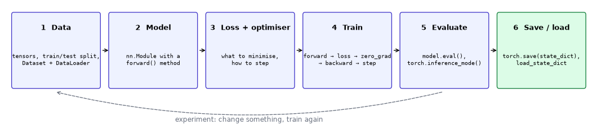
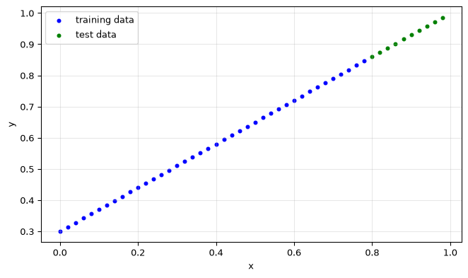
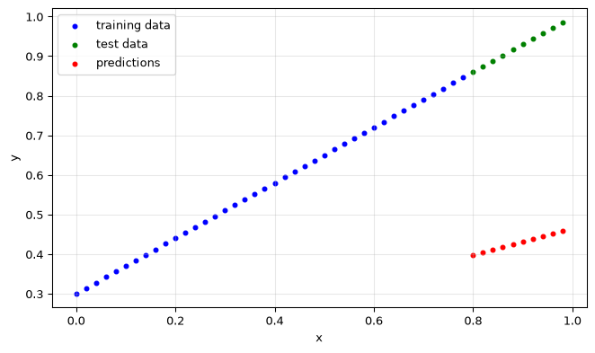
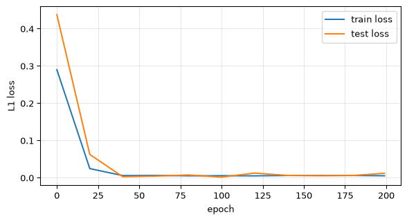
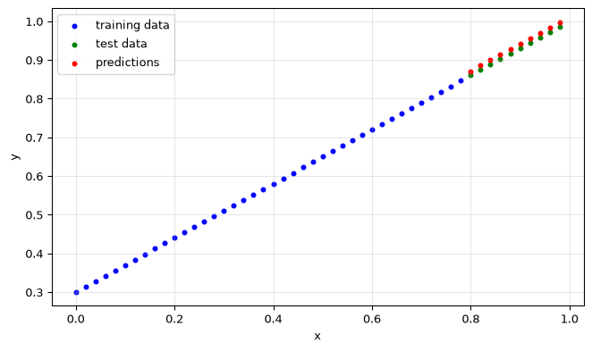
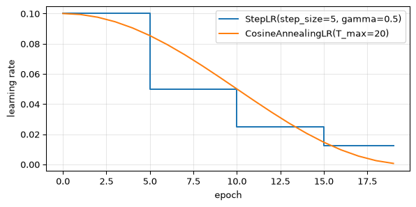
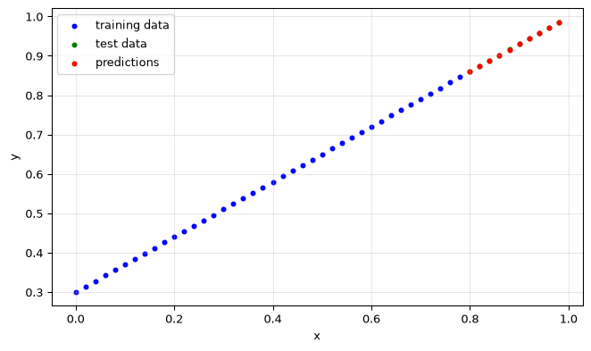

The PyTorch Workflow
The six steps every PyTorch project follows, done once end to end on a problem small enough to see completely: learn a straight line. Data and DataLoaders, an nn.Module, a loss and an optimiser, the training and testing loops, saving and loading, and the same workflow again on the GPU with nn.Linear. Every later model in the course is this loop with a bigger network.
01 The workflow at a glance

Python code for this figure
import matplotlib.pyplot as plt
from matplotlib.patches import FancyBboxPatch
steps = [("1 Data", "tensors, train/test split,\nDataset + DataLoader"), ("2 Model", "nn.Module with a\nforward() method"),
("3 Loss + optimiser", "what to minimise,\nhow to step"), ("4 Train", "forward → loss → zero_grad\n→ backward → step"),
("5 Evaluate", "model.eval(),\ntorch.inference_mode()"), ("6 Save / load", "torch.save(state_dict),\nload_state_dict")]
fig, ax = plt.subplots(figsize=(14, 3.1))
for i, (head, body) in enumerate(steps):
x = i * 2.35
ax.add_patch(FancyBboxPatch((x, 0), 2.05, 1.5, boxstyle="round,pad=0.05", fc="#eef2ff" if i < 5 else "#dcfce7", ec="#4338ca" if i < 5 else "#15803d"))
ax.text(x + 1.025, 1.18, head, ha="center", fontsize=10, weight="bold")
ax.text(x + 1.025, 0.55, body, ha="center", va="center", fontsize=7.6, family="monospace")
if i < 5:
ax.annotate("", (x + 2.33, 0.75), (x + 2.12, 0.75), arrowprops=dict(arrowstyle="->"))
ax.annotate("", (1.0, -0.12), (10.4, -0.12), arrowprops=dict(arrowstyle="->", color="#6b7280", connectionstyle="arc3,rad=-0.12", ls="--"))
ax.text(5.7, -0.75, "experiment: change something, train again", ha="center", fontsize=9, color="#6b7280")
ax.set_xlim(-0.2, 14.0); ax.set_ylim(-1.0, 1.7); ax.axis("off"); plt.show()The example is linear regression with known answers: data generated from y = 0.7x + 0.3. Because we know the true weight (0.7) and bias (0.3), we can check that training actually recovers them. A straight line is the smallest neural network there is (one nn.Linear(1, 1)), so every step below is exactly what you will do with a CNN later.
02 1 · Data
Make the data
Inputs X must be shaped (number of examples, number of features): here 50 examples with 1 feature, so (50, 1). unsqueeze(dim=1) turns the (50,) vector from arange into that column.
import torch
from torch import nn
import matplotlib.pyplot as plt
weight, bias = 0.7, 0.3 # the "true" parameters we hope to learn
X = torch.arange(0, 1, 0.02).unsqueeze(dim=1) # 50 inputs, shape (50, 1)
y = weight * X + bias # targets, shape (50, 1)
print(f"X {tuple(X.shape)} y {tuple(y.shape)}")
print("first five:", X[:5].flatten(), y[:5].flatten())X (50, 1) y (50, 1) first five: tensor([0.0000, 0.0200, 0.0400, 0.0600, 0.0800]) tensor([0.3000, 0.3140, 0.3280, 0.3420, 0.3560])
Split into training and test sets
A model is judged on data it has not trained on; otherwise a model that memorised the training set would look perfect. The usual split:
| Set | Used for | Typical share |
|---|---|---|
| Training | fitting the parameters (every step) | 60–80% |
| Validation | choosing settings: learning rate, size, when to stop | 10–20% |
| Test | one final, honest estimate at the end | 10–20% |
Here 80% train, 20% test (no validation set: there is nothing to tune). Because X is sorted, the test set is the right-hand end of the line, so the test checks whether the model extrapolates. With real data you shuffle before splitting.
train_split = int(0.8 * len(X))
X_train, y_train = X[:train_split], y[:train_split]
X_test, y_test = X[train_split:], y[train_split:]
print(f"train {len(X_train)} test {len(X_test)}")
def plot_predictions(train_data=X_train, train_labels=y_train, test_data=X_test, test_labels=y_test, predictions=None):
"""Training data (blue), test data (green) and, if given, predictions on the test inputs (red)."""
plt.figure(figsize=(8, 4.5))
plt.scatter(train_data, train_labels, c="b", s=12, label="training data")
plt.scatter(test_data, test_labels, c="g", s=12, label="test data")
if predictions is not None:
plt.scatter(test_data, predictions, c="r", s=12, label="predictions")
plt.xlabel("x"); plt.ylabel("y"); plt.legend(); plt.grid(alpha=0.3); plt.show()
plot_predictions()train 40 test 10

Dataset and DataLoader
Real datasets do not fit through a model in one go, so training works on mini-batches (note 06). PyTorch splits this into two pieces:
- a
Datasetknows how many examples there are and how to fetch examplei(TensorDatasetwraps tensors you already have; later notes use image datasets); - a
DataLoaderdraws batches from it:batch_sizeexamples at a time, reshuffled every epoch whenshuffle=True(for training; keep the test order fixed), optionally loading in parallel withnum_workers.
from torch.utils.data import TensorDataset, DataLoader
train_dataset = TensorDataset(X_train, y_train)
test_dataset = TensorDataset(X_test, y_test)
BATCH_SIZE = 8
train_dataloader = DataLoader(train_dataset, batch_size=BATCH_SIZE, shuffle=True)
test_dataloader = DataLoader(test_dataset, batch_size=BATCH_SIZE, shuffle=False)
print(f"{len(train_dataset)} training examples → {len(train_dataloader)} batches of up to {BATCH_SIZE}")
batch_X, batch_y = next(iter(train_dataloader))
print("one batch:", tuple(batch_X.shape), tuple(batch_y.shape), batch_X.flatten())40 training examples → 5 batches of up to 8 one batch: (8, 1) (8, 1) tensor([0.7600, 0.0400, 0.3000, 0.6800, 0.5200, 0.7400, 0.1800, 0.4200])
40 examples in batches of 8 gives 5 batches per epoch; with 42 the last batch would hold 2 (pass drop_last=True to skip it).
03 2 · Building a model
The building blocks
| PyTorch piece | What it does |
|---|---|
torch.nn |
all the layers, activations and losses |
nn.Module |
the base class of every model and layer: subclass it, create parameters/layers in __init__, compute in forward() |
nn.Parameter |
a tensor that belongs to a module and is trained (requires_grad=True automatically) |
torch.optim |
optimisers (SGD, Adam, …) that update the parameters from their gradients |
torch.utils.data |
Dataset and DataLoader (above) |
A model written by hand
Two learnable numbers and the formula \hat{y} = wx + b:
class LinearRegressionModel(nn.Module): # every model subclasses nn.Module
def __init__(self):
super().__init__() # sets up parameter tracking; always call it first
self.weights = nn.Parameter(torch.randn(1)) # start random; training will adjust them
self.bias = nn.Parameter(torch.randn(1))
def forward(self, x: torch.Tensor) -> torch.Tensor: # what model(x) computes
return self.weights * x + self.bias
torch.manual_seed(42)
model_0 = LinearRegressionModel()
print(list(model_0.parameters()))
print(model_0.state_dict()) # the same values, by name[Parameter containing:
tensor([0.3367], requires_grad=True), Parameter containing:
tensor([0.1288], requires_grad=True)]
OrderedDict({'weights': tensor([0.3367]), 'bias': tensor([0.1288])})You call the model like a function, model_0(X), and PyTorch runs forward (plus some bookkeeping; don't call forward directly).
Predictions before training
torch.inference_mode() switches autograd off for code that only predicts: no graph is recorded, so it is faster and uses less memory (torch.no_grad() does the same in older code).
with torch.inference_mode():
y_preds = model_0(X_test)
print(f"{len(y_preds)} predictions; first three: {y_preds[:3].flatten()}")
print("errors (y_test - y_preds):", (y_test - y_preds)[:3].flatten())
plot_predictions(predictions=y_preds) # random weights: nowhere near the green points10 predictions; first three: tensor([0.3982, 0.4049, 0.4116]) errors (y_test - y_preds): tensor([0.4618, 0.4691, 0.4764])

The usual way: nn.Linear and nn.Sequential
Writing parameters by hand is rare. nn.Linear(in_features, out_features) creates the weight matrix and bias for you and computes xW^T + b; activations are layers too (nn.ReLU(), nn.Sigmoid()). A small classifier for 2 inputs:
class SimpleNN(nn.Module):
def __init__(self):
super().__init__()
self.layer1 = nn.Linear(in_features=2, out_features=10) # 2 inputs → 10 hidden units
self.relu = nn.ReLU()
self.layer2 = nn.Linear(in_features=10, out_features=1) # 10 hidden → 1 output
self.sigmoid = nn.Sigmoid() # output in (0, 1): a probability
def forward(self, x):
x = self.layer1(x) # (batch, 2) → (batch, 10)
x = self.relu(x)
x = self.layer2(x) # (batch, 10) → (batch, 1)
return self.sigmoid(x)
net = SimpleNN()
print(net) # the layers, in the order they were created
print("output shape for a batch of 5:", tuple(net(torch.rand(5, 2)).shape))SimpleNN( (layer1): Linear(in_features=2, out_features=10, bias=True) (relu): ReLU() (layer2): Linear(in_features=10, out_features=1, bias=True) (sigmoid): Sigmoid() ) output shape for a batch of 5: (5, 1)
When the layers simply run one after another, nn.Sequential saves writing forward:
seq = nn.Sequential(nn.Linear(2, 10), nn.ReLU(), nn.Linear(10, 1), nn.Sigmoid()) print(seq)
Sequential( (0): Linear(in_features=2, out_features=10, bias=True) (1): ReLU() (2): Linear(in_features=10, out_features=1, bias=True) (3): Sigmoid() )
Counting parameters
A linear layer from m inputs to n outputs has an n \times m weight matrix plus n biases: mn + n parameters (note 03). Activations have none. PyTorch counts for you:
for name, p in net.named_parameters():
print(f"{name:15s} {str(tuple(p.shape)):10s} {p.numel():4d}")
print("total:", sum(p.numel() for p in net.parameters() if p.requires_grad), " = (2·10 + 10) + (10·1 + 1)")layer1.weight (10, 2) 20 layer1.bias (10,) 10 layer2.weight (1, 10) 10 layer2.bias (1,) 1 total: 41 = (2·10 + 10) + (10·1 + 1)
Consider the following PyTorch code:
import torch
import torch.nn as nn
import torch.nn.functional as F
class Net(nn.Module):
def __init__(self):
super().__init__()
self.fc1 = nn.Linear(12, 8)
self.fc2 = nn.Linear(8, 6)
self.fc3 = nn.Linear(6, 4)
def forward(self, x):
x = F.relu(self.fc1(x))
x = self.fc2(x)
x = F.relu(x)
x = self.fc3(x)
return x
model = Net()
inp = torch.randn(10, 12)
out = model(inp)Which of the following statements is/are correct?
- The output after the first linear layer (
fc1) has shape(10, 8). - There are 30 neurons in the network.
- The final output
outhas shape(10, 4). - The ratio of input neurons to output neurons in this network is 1:3.
Before solving the question, let's understand a few terms.
-
nn.Linear(in_features, out_features)Creates a fully connected (dense) layer.
in_features→ Number of input neurons.out_features→ Number of output neurons.
For example,
nn.Linear(12, 8)
means
12 input neurons
│
▼
8 output neuronsThe network architecture is
Input Layer : 12 neurons
│
fc1 : 12 → 8
│
fc2 : 8 → 6
│
fc3 : 6 → 4
│
Output Layer : 4 neuronsThe input is
inp = torch.randn(10, 12)
Here,
- 10 → Batch size (10 input samples are processed together).
- 12 → Number of features (input neurons).
So the input shape is
(10, 12)
Passing through fc1
x = self.fc1(x)
fc1 changes
12 features
into
8 features.
The batch size does not change.
So,
(10,12) ↓ (10,8)
After applying
F.relu(...)
the shape remains unchanged because ReLU only changes the values, not the dimensions.
Therefore,
Output after fc1 = (10,8)
Passing through fc2
x = self.fc2(x)
Shape changes from
(10,8) ↓ (10,6)
Again,
F.relu(x)
does not change the shape.
Passing through fc3
x = self.fc3(x)
Shape changes from
(10,6) ↓ (10,4)
Therefore,
out
has shape
(10,4)
Option A ✅ : The output after the first linear layer (
fc1) has shape(10, 8).
Correct.
The batch size stays 10, while the number of features changes from 12 to 8.
Option B ❌ : There are 30 neurons in the network.
The network contains
- Input Layer = 12 neurons
- Hidden Layer 1 = 8 neurons
- Hidden Layer 2 = 6 neurons
- Output Layer = 4 neurons
Total neurons
However, input neurons are usually not counted as computational neurons, since they simply hold the input values and perform no computation.
In neural networks, when someone asks for the number of neurons in the network, they generally refer to the hidden and output neurons.
That would be
So this statement is considered incorrect.
Option C ✅ : The final output
outhas shape(10, 4).
Correct.
The last layer converts
6 features ↓ 4 features
while keeping the batch size 10.
Option D ❌ : The ratio of input neurons to output neurons in this network is 1:3.
The network has
- Input neurons = 12
- Output neurons = 4
Therefore,
not
💡 Easy Way to Track Shapes
Input
(10,12)
│
▼
fc1
(10,8)
│
▼
fc2
(10,6)
│
▼
fc3
(10,4)Notice that
- The first number (10) is the batch size and never changes.
- The second number changes according to each
Linearlayer.
No clue? Track only the last number of the shape through each layer: nn.Linear(a, b) turns (..., a) into (..., b) and never touches the batch size in front. For counting neurons, the usual convention counts units that compute something (hidden and output layers), not the input values. Then run the code in a + cell and print model.fc1(inp).shape and out.shape.
Consider the following code snippet:
model = nn.Sequential(
nn.Linear(10, 20),
nn.ReLU(),
nn.Linear(20, 5),
nn.ReLU(),
nn.Linear(5, 1)
)How many trainable parameters (including bias) does this model have in total?
Before solving the question, let's understand the important terms.
-
Trainable Parameters
These are the values the neural network learns during training.
They consist of
- Weights
- Biases
-
nn.Linear(in_features, out_features)Creates a fully connected layer.
in_features→ Number of input neurons.out_features→ Number of output neurons.
For every Linear layer,
where
- Input Neurons × Output Neurons = Weights
- Output Neurons = Biases
Notice that
nn.ReLU()
has no trainable parameters.
It only applies the ReLU activation function.
So, we only count the Linear layers.
First Linear Layer
nn.Linear(10, 20)
Weights
Biases
Total parameters
Second Linear Layer
nn.Linear(20, 5)
Weights
Biases
Total parameters
Third Linear Layer
nn.Linear(5, 1)
Weights
Biases
Total parameters
Total Trainable Parameters
Add the parameters from all Linear layers.
Therefore,
trainable parameters are present in the model.
💡 Easy Way to Remember
Only Linear (or Conv) layers have trainable parameters.
Activation functions like
ReLU Sigmoid Tanh Softmax
do not have any trainable parameters.
For this network,
Linear(10→20) 200 weights 20 biases ↓ 220 + Linear(20→5) 100 weights 5 biases ↓ 105 + Linear(5→1) 5 weights 1 bias ↓ 6 Total = 331
No clue? Count only the layers with weights. For each nn.Linear(m, n) write m·n + n, add them up, and check with sum(p.numel() for p in model.parameters()) in a + cell.
04 3 · Loss and optimiser
Choosing the loss
The loss turns "how wrong" into one number to minimise (note 05). PyTorch's built-ins:
| Task | Model output | Loss |
|---|---|---|
| Regression | any real number | nn.MSELoss() (squared error) or nn.L1Loss() (absolute error, MAE) |
| Binary classification | one probability (after nn.Sigmoid) |
nn.BCELoss() |
| Binary classification | one raw score (no sigmoid) | nn.BCEWithLogitsLoss(), more stable |
| Multi-class classification | one raw score per class (logits) | nn.CrossEntropyLoss() |
Two rules people trip on. nn.CrossEntropyLoss applies log_softmax itself, so the model must output raw logits with no softmax layer at the end, and the targets are class indices (int64), not one-hot vectors. And the ...WithLogits / CrossEntropy losses are preferred over "sigmoid + BCELoss" because combining the two steps avoids log(0) overflow.
logits = torch.tensor([[2.0, 0.5, -1.0]]) # raw scores for 3 classes, one example
target = torch.tensor([0]) # the true class index
ce = nn.CrossEntropyLoss()
print("CrossEntropyLoss(logits) :", ce(logits, target).item())
print("-log(softmax(logits)[true class]) :", -torch.log_softmax(logits, dim=1)[0, 0].item())
print("softmax first (a bug: applied twice):", ce(torch.softmax(logits, dim=1), target).item())CrossEntropyLoss(logits) : 0.24131132662296295 -log(softmax(logits)[true class]) : 0.24131132662296295 softmax first (a bug: applied twice): 0.7017174959182739
Is the following statement True or False?
Using
torch.nn.Softmaxbeforetorch.nn.CrossEntropyLossis unnecessary, becauseCrossEntropyLossin PyTorch expects raw logits and internally applieslog_softmax.
- True — PyTorch expects raw logits, not probabilities.
- False —
CrossEntropyLossrequires probabilities as input.
Before solving the question, let's understand the important terms.
-
Logits → The raw output values produced by the last layer of a neural network before any activation function is applied.
For example,
Output of the last layer [2.5, 0.8, -1.3]
These are logits.
Notice that
-
They are not between 0 and 1.
-
They do not add up to 1.
-
Softmax → Converts logits into probabilities.
For example,
Logits [2.5, 0.8, -1.3]
After applying Softmax,
Probabilities [0.82, 0.15, 0.03]
Now,
-
Every value lies between 0 and 1.
-
All probabilities add up to 1.
-
CrossEntropyLoss → A loss function commonly used for multi-class classification.
In PyTorch,
CrossEntropyLoss expects raw logits, not probabilities.
Internally, it automatically performs
Logits ↓ log_softmax ↓ Cross Entropy Loss
Because it already applies log_softmax, you should not apply Softmax yourself before passing the output to CrossEntropyLoss.
Doing so means Softmax is effectively applied twice, which can lead to incorrect training and numerical instability.
Option A ✅ : True — PyTorch expects raw logits, not probabilities.
This is exactly how CrossEntropyLoss is designed.
The model should output raw logits, and CrossEntropyLoss handles the conversion internally.
✅ Option A is Correct.
Option B ❌ : False —
CrossEntropyLossrequires probabilities as input.
Incorrect.
This is a common misunderstanding.
Unlike some other deep learning libraries, PyTorch's CrossEntropyLoss expects raw logits, not probabilities.
💡 Easy Way to Remember
When using CrossEntropyLoss, think of the pipeline as
Input
↓
Neural Network
↓
Raw Logits
↓
CrossEntropyLoss
│
└── Internally applies log_softmaxDo NOT do this:
Neural Network ↓ Softmax ↓ CrossEntropyLoss
because CrossEntropyLoss already performs the necessary conversion internally.
No clue? Look at what the loss's documentation says it expects, or test it: the cell just above computes the loss from logits, from -log_softmax by hand, and with an extra softmax in front. The first two agree; the third does not, which tells you the loss already contains the softmax.
A custom loss
A loss is just a module whose forward returns a scalar tensor, so you can write your own. Here are MAE (identical to nn.L1Loss) and the Huber loss, quadratic for small errors and linear for large ones:
class MeanAbsoluteError(nn.Module):
def forward(self, predictions, targets):
return torch.mean(torch.abs(predictions - targets))
class HuberLoss(nn.Module):
def __init__(self, delta=1.0):
super().__init__()
self.delta = delta
def forward(self, predictions, targets):
a = torch.abs(targets - predictions)
quadratic = 0.5 * a ** 2
linear = self.delta * a - 0.5 * self.delta ** 2
return torch.mean(torch.where(a <= self.delta, quadratic, linear))
p, t = torch.tensor([1.0, 2.0, 7.0]), torch.tensor([1.5, 2.0, 2.0])
print("custom MAE :", MeanAbsoluteError()(p, t).item(), " nn.L1Loss :", nn.L1Loss()(p, t).item())
print("custom Huber:", HuberLoss(1.0)(p, t).item(), " nn.HuberLoss:", nn.HuberLoss(delta=1.0)(p, t).item())custom MAE : 1.8333333730697632 nn.L1Loss : 1.8333333730697632 custom Huber: 1.5416666269302368 nn.HuberLoss: 1.5416666269302368
The optimiser
The optimiser holds a reference to the model's parameters and, on optimizer.step(), moves each one using its .grad (note 06). Plain SGD does \theta \leftarrow \theta - \eta \nabla_\theta L; torch.optim.Adam is the usual default for bigger models. The learning rate lr is the setting that matters most.
loss_fn = nn.L1Loss() # MAE: fine for this regression optimizer = torch.optim.SGD(params=model_0.parameters(), lr=0.01) print(loss_fn, optimizer, sep="\n")
L1Loss()
SGD (
Parameter Group 0
dampening: 0
differentiable: False
foreach: None
fused: None
lr: 0.01
maximize: False
momentum: 0
nesterov: False
weight_decay: 0
)05 4 · The training and testing loops
The five steps of a training step
For each batch:
- Forward pass:
y_pred = model(X). - Loss:
loss = loss_fn(y_pred, y). - Zero the gradients:
optimizer.zero_grad(), because gradients accumulate (note 11). - Backward pass:
loss.backward()computes \partial L / \partial \theta for every parameter. - Step:
optimizer.step()updates the parameters.
The order of 3 relative to 1–2 does not matter, but it must come before 4. Testing is the same forward pass and loss with no steps 3–5, inside model.eval() and torch.inference_mode().
model.train() and model.eval() switch layers that behave differently in training (dropout, batch norm, note 09). This model has none, but writing both is the habit that saves you later.
torch.manual_seed(42)
model_0 = LinearRegressionModel()
optimizer = torch.optim.SGD(model_0.parameters(), lr=0.01)
EPOCHS = 200
history = {"epoch": [], "train": [], "test": []}
for epoch in range(EPOCHS):
model_0.train()
train_loss = 0.0
for batch_X, batch_y in train_dataloader:
y_pred = model_0(batch_X) # 1 forward
loss = loss_fn(y_pred, batch_y) # 2 loss
optimizer.zero_grad() # 3 clear old gradients
loss.backward() # 4 backward
optimizer.step() # 5 update
train_loss += loss.item()
train_loss /= len(train_dataloader)
model_0.eval()
with torch.inference_mode():
test_loss = sum(loss_fn(model_0(bx), by).item() for bx, by in test_dataloader) / len(test_dataloader)
if epoch % 20 == 0 or epoch == EPOCHS - 1:
history["epoch"].append(epoch); history["train"].append(train_loss); history["test"].append(test_loss)
print(f"epoch {epoch:3d} | train loss {train_loss:.4f} | test loss {test_loss:.4f}")
print("learned:", {k: round(v.item(), 4) for k, v in model_0.state_dict().items()}, " true: weights 0.7, bias 0.3")epoch 0 | train loss 0.2899 | test loss 0.4375
epoch 20 | train loss 0.0244 | test loss 0.0624
epoch 40 | train loss 0.0058 | test loss 0.0027
epoch 60 | train loss 0.0061 | test loss 0.0043
epoch 80 | train loss 0.0051 | test loss 0.0073
epoch 100 | train loss 0.0054 | test loss 0.0016
epoch 120 | train loss 0.0050 | test loss 0.0125
epoch 140 | train loss 0.0060 | test loss 0.0061
epoch 160 | train loss 0.0060 | test loss 0.0053
epoch 180 | train loss 0.0060 | test loss 0.0060
epoch 199 | train loss 0.0052 | test loss 0.0118
learned: {'weights': 0.706, 'bias': 0.3063} true: weights 0.7, bias 0.3plt.figure(figsize=(7, 3.5))
plt.plot(history["epoch"], history["train"], label="train loss")
plt.plot(history["epoch"], history["test"], label="test loss")
plt.xlabel("epoch"); plt.ylabel("L1 loss"); plt.legend(); plt.grid(alpha=0.3); plt.show()
with torch.inference_mode():
y_preds = model_0(X_test)
plot_predictions(predictions=y_preds)

Both losses fall together toward zero and the red predictions land on the green test points: the model recovered the line. Try lr=0.001 (too slow for 200 epochs) or lr=0.5 (it bounces) and run both cells again.
Why does the loss stop near 0.005 and wobble instead of reaching 0? The L1 loss's gradient is \pm 1 whatever the size of the error, so every step moves the parameters by about the learning rate, even right next to the answer: with a fixed rate, the line keeps jittering around 0.7 and 0.3. A shrinking learning rate (a schedule, below) or the MSE loss, whose gradient shrinks with the error, lets it settle.
Consider the following PyTorch training loop:
for epoch in range(100):
for data, target in loader:
optimizer.zero_grad()
output = model(data)
loss = criterion(output, target)
loss.backward()
optimizer.step()
print(loss.item())Which of the following is/are correct?
- The printed
loss.item()is from the last mini-batch of each epoch. - Forgetting
optimizer.zero_grad()can cause gradients to accumulate and training to diverge. - If
loss.backward()is called butoptimizer.step()is omitted, the weights won't update, though gradients are computed.
A. The printed
loss.item()is from the last mini-batch of each epoch. ✅
The print(loss.item()) statement is outside the inner loop but inside the epoch loop.
loss: Stores how much error the model made for the current mini-batch..item(): Converts the single-value tensor (loss) into a normal Python number so it can be printed.
Since loss is updated for every mini-batch inside the loop, after the loop finishes it contains the last mini-batch's loss.
Therefore, the printed value corresponds to the last mini-batch loss, not the average loss of the epoch.
B. Forgetting
optimizer.zero_grad()can cause gradients to accumulate and training to diverge. ✅
PyTorch : accumulates gradients by default.
optimizer: Updates the model's weights.zero_grad(): Clears the gradients from the previous iteration before computing new ones.- Gradient accumulation: If gradients are not cleared, new gradients are added to the old ones, resulting in incorrect weight updates.
Since PyTorch accumulates gradients by default, forgetting optimizer.zero_grad() can make the updates too large and training may become unstable.
C. If
loss.backward()is called butoptimizer.step()is omitted, the weights won't update, though gradients are computed. ✅
loss.backward() performs backpropagation
It computes and stores these gradients in parameter.grad, However, no parameters are updated until optimizer.step() is executed.
loss.backward(): Computes the gradients of the loss with respect to the model's parameters.optimizer.step(): Uses those gradients to update the model's weights.
If optimizer.step() is skipped, gradients are still computed, but the weights never change, so the model does not learn.
❓ Question:
The following is a custom PyTorch training loop:
for epoch in range(num_epochs):
for inputs, labels in dataloader:
outputs = model(inputs)
loss = criterion(outputs, labels)
loss.backward()
optimizer.step()
Which of the following statements is correct?
A. Gradients from previous batches will accumulate, leading to larger-than-intended updates.
B. The code will not run at all due to a missing statement in the training loop.
C. The effective learning rate will increase exponentially due to gradient accumulation.
D. Training will happen stably as usual.
❓ Question:for epoch in range(num_epochs):
for inputs, labels in dataloader:
outputs = model(inputs)
loss = criterion(outputs, labels)
loss.backward()
optimizer.step()A. Gradients from previous batches will accumulate, leading to larger-than-intended updates.
B. The code will not run at all due to a missing statement in the training loop.
C. The effective learning rate will increase exponentially due to gradient accumulation.
D. Training will happen stably as usual.
Before solving the question, let's understand the important functions used in a PyTorch training loop.
-
loss.backward()→ Computes the gradients of the loss with respect to every trainable parameter and stores them in the parameter's.gradattribute. -
optimizer.step()→ Updates the model's weights using the gradients that were computed byloss.backward(). -
optimizer.zero_grad()→ Clears (resets) all previously stored gradients.
A normal PyTorch training loop looks like this:
for inputs, labels in dataloader:
optimizer.zero_grad()
outputs = model(inputs)
loss = criterion(outputs, labels)
loss.backward()
optimizer.step()Notice that
optimizer.zero_grad()
is called before loss.backward().
What is missing in the given code?
The given code does not call
optimizer.zero_grad()
before computing the next batch.
Why is this a problem?
PyTorch does not automatically clear gradients after each batch.
Instead,
loss.backward()
adds the newly computed gradients to the gradients already stored.
For example,
After Batch 1,
Gradient = 2
After Batch 2,
instead of replacing it,
Gradient = 2 + 3 = 5
After Batch 3,
Gradient = 5 + 4 = 9
The gradients keep accumulating.
As a result,
optimizer.step()
updates the weights using these accumulated gradients, producing larger-than-intended updates.
Option A ✅ : Gradients from previous batches will accumulate, leading to larger-than-intended updates.
This is exactly what happens when optimizer.zero_grad() is omitted.
✅ Option A is Correct.
Option B ❌ : The code will not run at all due to a missing statement in the training loop.
The code will run.
It simply produces incorrect training because the gradients are never cleared.
Option C ❌ : The effective learning rate will increase exponentially due to gradient accumulation.
The learning rate itself never changes.
The updates become larger because the gradients accumulate, not because the learning rate increases.
Also, the increase is not necessarily exponential.
Option D ❌ : Training will happen stably as usual.
Training is usually unstable because gradients from multiple batches are added together.
💡 Easy Intuition
Imagine you are writing numbers on a whiteboard.
Without erasing:
Batch 1 2
Next batch:
2 + 3 = 5
Next batch:
5 + 4 = 9
The numbers keep growing.
optimizer.zero_grad() is like erasing the whiteboard before writing the gradient for the next batch.
Without erasing, old gradients remain, leading to incorrect weight updates.
No clue? Read the loop line by line and ask of each line: where is it (which loop), and what does it change (gradients, weights, or nothing)? print sits in the outer loop, so it sees whatever loss was last assigned; zero_grad clears .grad; backward fills .grad; only step changes weights.
Consider the following training loop:
for epoch in range(5):
for i in range(0, 32, 8):
xb, yb = X[i:i+8], y[i:i+8]
output = model(xb)
loss = criterion(output, yb)
loss.backward()
optimizer.step()Notice that optimizer.zero_grad() is missing.
Suppose we insert optimizer.zero_grad() in different places.
Which of the following statements is/are correct?
- Without
optimizer.zero_grad(), gradients accumulate across mini-batches, leading to unstable training (not standard SGD). - Placing
optimizer.zero_grad()inside the inner loop makes it proper mini-batch SGD with batch size = 8. - Placing
optimizer.zero_grad()only once before the inner loop makes it equivalent to full-batch gradient descent on 32 samples. - The final parameter updates will always be the same, regardless of where
zero_grad()is placed.
Before solving the question, let's understand the important functions.
-
loss.backward()Computes the gradients of the loss with respect to all trainable parameters.
These gradients are stored in each parameter's
.grad. -
optimizer.step()Uses the stored gradients to update the model's weights.
-
optimizer.zero_grad()Clears all previously stored gradients.
PyTorch does not automatically clear gradients after each batch.
The dataset contains
32 samples
The loop processes
range(0, 32, 8)
which means
Batch 1 : samples 0–7 Batch 2 : samples 8–15 Batch 3 : samples 16–23 Batch 4 : samples 24–31
So each mini-batch contains
8 samples.
Option A ✅ : Without
optimizer.zero_grad(), gradients accumulate across mini-batches, leading to unstable training (not standard SGD).
This is correct.
Without
optimizer.zero_grad()
the gradients from one mini-batch remain stored.
When the next batch calls
loss.backward()
the new gradients are added to the previous ones.
For example,
Batch 1 Gradient 2
After Batch 2,
2 + 3 = 5
After Batch 3,
5 + 4 = 9
The gradients continue accumulating, leading to larger-than-intended weight updates.
Therefore, this is not standard mini-batch SGD.
✅ Option A is Correct.
Option B ✅ : Placing
optimizer.zero_grad()inside the inner loop makes it proper mini-batch SGD with batch size = 8.
Suppose we write
for epoch in range(5):
for i in range(0, 32, 8):
optimizer.zero_grad()
output = model(xb)
loss.backward()
optimizer.step()Now, before processing each mini-batch,
the previous gradients are cleared.
Each weight update is based only on the current batch of 8 samples.
This is exactly how mini-batch SGD is normally implemented.
✅ Option B is Correct.
Option C ❌ : Placing
optimizer.zero_grad()only once before the inner loop makes it equivalent to full-batch gradient descent on 32 samples.
The course's answer key marks this correct, but as written it is not. The option only moves zero_grad(); optimizer.step() is still inside the inner loop, so each epoch does
clear batch 1: backward → .grad = g₁ → step with g₁ batch 2: backward → .grad = g₁ + g₂ → step with g₁ + g₂ batch 3: backward → .grad = g₁ + g₂ + g₃ → step with g₁ + g₂ + g₃ batch 4: backward → .grad = g₁ + … + g₄ → step with g₁ + … + g₄
Four updates per epoch with ever-growing sums of gradients, each computed at different weights: that is neither mini-batch SGD nor full-batch gradient descent.
It becomes full-batch gradient descent only if optimizer.step() is also moved out of the inner loop, so there is one update per epoch. Even then there is a detail: each batch's loss is a mean over 8 examples, so the accumulated gradient g_1 + g_2 + g_3 + g_4 is 4 times the gradient of the mean loss over all 32. It is full-batch gradient descent with a 4× larger learning rate (or divide each batch loss by 4 to match exactly). The cell after this question checks all of this numerically.
Option D ❌ : The final parameter updates will always be the same, regardless of where
zero_grad()is placed.
Incorrect.
Where optimizer.zero_grad() is placed changes
- which gradients are used,
- how many gradients are accumulated,
- and how often the weights are updated.
Therefore, different placements produce different training behavior.
💡 Easy Way to Remember
There are three common cases.
Case 1 — No zero_grad()
Batch 1 ↓ Batch 2 ↓ Batch 3 ↓ Gradients keep accumulating
Not standard training.
Case 2 — zero_grad() before every mini-batch
Clear ↓ Batch 1 ↓ Update ↓ Clear ↓ Batch 2 ↓ Update
This is Mini-Batch SGD.
Case 3 — zero_grad() once before all mini-batches, and step() once after them
Clear ↓ Batch 1 ↓ Batch 2 ↓ Batch 3 ↓ Batch 4 ↓ One Update
This behaves like Full-Batch Gradient Descent (with the gradient summed over the 4 batches, i.e. a 4× learning rate). Without moving step() out as well, it is not.
No clue? Write out what .grad holds at each step() for each placement, as in the table under option C. If two placements give different sequences of updates, they cannot be equivalent.
Checking the claims about option C numerically: the same model and data, trained for 5 epochs with each placement, against true full-batch gradient descent.
import copy
torch.manual_seed(0)
Xq, yq = torch.randn(32, 3), torch.randn(32, 1)
base, crit = nn.Linear(3, 1), nn.MSELoss()
def train(placement, lr=0.05):
m = copy.deepcopy(base); opt = torch.optim.SGD(m.parameters(), lr=lr)
for epoch in range(5):
if placement != "every batch": opt.zero_grad()
for i in range(0, 32, 8):
if placement == "every batch": opt.zero_grad()
crit(m(Xq[i:i+8]), yq[i:i+8]).backward()
if placement != "once, step after": opt.step()
if placement == "once, step after": opt.step()
return torch.cat([p.detach().flatten() for p in m.parameters()])
def full_batch(lr):
m = copy.deepcopy(base); opt = torch.optim.SGD(m.parameters(), lr=lr)
for epoch in range(5):
opt.zero_grad(); crit(m(Xq), yq).backward(); opt.step()
return torch.cat([p.detach().flatten() for p in m.parameters()])
for placement in ["once, step inside (option C as written)", "once, step after"]:
w = train(placement.split(" (")[0])
print(f"{placement:42s} = full batch: {torch.allclose(w, full_batch(0.05), atol=1e-6)} = full batch with 4× lr: {torch.allclose(w, full_batch(0.2), atol=1e-6)}")once, step inside (option C as written) = full batch: False = full batch with 4× lr: False once, step after = full batch: False = full batch with 4× lr: True
Learning-rate schedules
A scheduler changes the optimiser's learning rate as training goes on: big steps early, small steps to settle in (note 06). You call scheduler.step() once per epoch, after the epoch's optimizer.step() calls. StepLR(optimizer, step_size, gamma) multiplies the rate by gamma every step_size epochs:
import torch.optim as optim
m = nn.Linear(1, 1)
opt = optim.SGD(m.parameters(), lr=0.1)
schedulers = {"StepLR(step_size=5, gamma=0.5)": optim.lr_scheduler.StepLR(opt, step_size=5, gamma=0.5)}
lrs = []
for epoch in range(20):
lrs.append(opt.param_groups[0]["lr"])
opt.step() # (a real loop trains here)
schedulers["StepLR(step_size=5, gamma=0.5)"].step()
opt2 = optim.SGD(m.parameters(), lr=0.1)
cos = optim.lr_scheduler.CosineAnnealingLR(opt2, T_max=20)
lrs_cos = []
for epoch in range(20):
lrs_cos.append(opt2.param_groups[0]["lr"]); opt2.step(); cos.step()
plt.figure(figsize=(7, 3.2))
plt.step(range(20), lrs, where="post", label="StepLR(step_size=5, gamma=0.5)")
plt.plot(range(20), lrs_cos, label="CosineAnnealingLR(T_max=20)")
plt.xlabel("epoch"); plt.ylabel("learning rate"); plt.legend(); plt.grid(alpha=0.3); plt.show()
print("StepLR rates:", [round(v, 4) for v in lrs])
StepLR rates: [0.1, 0.1, 0.1, 0.1, 0.1, 0.05, 0.05, 0.05, 0.05, 0.05, 0.025, 0.025, 0.025, 0.025, 0.025, 0.0125, 0.0125, 0.0125, 0.0125, 0.0125]
Consider the following code snippet:
optimizer = optim.Adam(model.parameters(), lr=0.01)
scheduler = optim.lr_scheduler.StepLR(
optimizer,
step_size=5,
gamma=0.5
)
lrs = []
for epoch in range(12):
lrs.append(optimizer.param_groups[0]['lr'])
scheduler.step()What is the learning rate after epoch 10? (Round to 4 decimal places)
Before solving the question, let's understand the important terms.
-
Learning Rate (lr)
The learning rate controls how much the model's weights are updated after each training step.
-
Learning Rate Scheduler
A scheduler automatically changes the learning rate during training.
-
StepLR
StepLRreduces the learning rate after a fixed number of epochs.
Its syntax is
StepLR(
optimizer,
step_size,
gamma
)where
step_size→ Number of epochs after which the learning rate is reduced.gamma→ The factor by which the learning rate is multiplied.
In this question,
lr = 0.01
Initial learning rate
0.01
step_size = 5
Every 5 epochs, the learning rate is reduced.
gamma = 0.5
Whenever it is reduced,
New LR = Old LR × 0.5
which means the learning rate becomes half of its previous value.
Now let's track the learning rate.
| Epoch | Learning Rate |
|---|---|
| 0 | 0.0100 |
| 1 | 0.0100 |
| 2 | 0.0100 |
| 3 | 0.0100 |
| 4 | 0.0100 |
| 5 | 0.0050 |
| 6 | 0.0050 |
| 7 | 0.0050 |
| 8 | 0.0050 |
| 9 | 0.0050 |
| 10 | 0.0025 |
| 11 | 0.0025 |
Explanation:
- At epoch 5, the learning rate is halved.
- At epoch 10, it is halved again.
Therefore, after epoch 10, the learning rate is
💡 Easy Way to Remember
StepLR follows this rule:
Every step_size epochs ↓ Multiply learning rate by gamma
For this question,
Initial LR
0.0100
│
▼
After 5 epochs
0.0050
│
▼
After 10 epochs
0.0025So the final answer is
No clue? Use the formula above the question, \eta = \eta_0 \gamma^{\lfloor \text{epoch}/\text{step\_size} \rfloor}: 0.01 \cdot 0.5^{\lfloor 10/5 \rfloor} = 0.01 \cdot 0.25 = 0.0025. Or run the snippet in a + cell with any small model and print lrs.
06 A classifier end to end
The same loop on a tiny classification problem: will a team win (1) or not (0), from two features, its average goals scored and its opponent's average goals conceded. The model ends in a sigmoid, so it outputs a probability and pairs with nn.BCELoss; the targets must be float32 for BCE.
X_cls = torch.tensor([[3.0, 0.5], [1.0, 1.0], [0.5, 2.0], [2.0, 1.5], [3.5, 3.0], [2.0, 2.5],
[1.5, 1.0], [0.5, 0.5], [2.5, 0.8], [2.1, 2.0], [1.2, 0.5], [0.7, 1.5]])
y_cls = torch.tensor([[1], [0], [0], [1], [1], [0], [1], [0], [1], [0], [1], [0]], dtype=torch.float32)
torch.manual_seed(0)
clf = nn.Sequential(nn.Linear(2, 10), nn.ReLU(), nn.Linear(10, 1), nn.Sigmoid())
criterion = nn.BCELoss()
opt = torch.optim.Adam(clf.parameters(), lr=0.1)
for epoch in range(50):
clf.train()
opt.zero_grad()
loss = criterion(clf(X_cls), y_cls) # the whole dataset is one batch here
loss.backward()
opt.step()
if (epoch + 1) % 10 == 0:
print(f"epoch {epoch + 1:2d} loss {loss.item():.4f}")
clf.eval()
with torch.inference_mode():
probs = clf(X_cls)
pred = (probs > 0.5).float()
print("accuracy on the training set:", (pred == y_cls).float().mean().item())
print("a new match, scored 2.8 / conceded 0.6 → P(win) =", round(clf(torch.tensor([[2.8, 0.6]])).item(), 3))epoch 10 loss 0.2319 epoch 20 loss 0.0538 epoch 30 loss 0.0162 epoch 40 loss 0.0072 epoch 50 loss 0.0043 accuracy on the training set: 1.0 a new match, scored 2.8 / conceded 0.6 → P(win) = 1.0
07 5 · Evaluating
After training, evaluate in eval() mode under inference_mode(). For regression, report errors in the units of the target:
model_0.eval()
with torch.inference_mode():
y_preds = model_0(X_test)
mae = torch.mean(torch.abs(y_preds - y_test))
rmse = torch.sqrt(torch.mean((y_preds - y_test) ** 2))
print(f"MAE {mae:.4f} RMSE {rmse:.4f} (targets range {y_test.min():.2f} to {y_test.max():.2f})")MAE 0.0116 RMSE 0.0116 (targets range 0.86 to 0.99)
08 6 · Saving and loading
Save the state_dict: an ordered dictionary of every parameter (and buffer) by name. It is just tensors, so it is small and loads into any instance of the same class. (Saving the whole model object with torch.save(model) also works but ties the file to your exact code and folder layout.)
| Call | Does |
|---|---|
torch.save(obj, path) |
writes any Python object of tensors to disk (pickle) |
torch.load(path, weights_only=True) |
reads it back; weights_only=True refuses arbitrary code, so use it for files you did not make |
model.load_state_dict(state_dict) |
copies saved parameters into a model |
from pathlib import Path
MODEL_PATH = Path("models"); MODEL_PATH.mkdir(exist_ok=True) # workspace/models, next to the data
MODEL_SAVE_PATH = MODEL_PATH / "01_pytorch_workflow_model_0.pth"
torch.save(obj=model_0.state_dict(), f=MODEL_SAVE_PATH)
print(f"saved {MODEL_SAVE_PATH} ({MODEL_SAVE_PATH.stat().st_size} bytes):", torch.load(MODEL_SAVE_PATH, weights_only=True))
loaded_model_0 = LinearRegressionModel() # fresh random parameters …
loaded_model_0.load_state_dict(torch.load(MODEL_SAVE_PATH, weights_only=True)) # … replaced by the saved ones
loaded_model_0.eval()
with torch.inference_mode():
loaded_preds = loaded_model_0(X_test)
print("loaded model predicts exactly the same:", torch.equal(loaded_preds, y_preds))saved models\01_pytorch_workflow_model_0.pth (2117 bytes): OrderedDict({'weights': tensor([0.7060]), 'bias': tensor([0.3063])})
loaded model predicts exactly the same: True09 Putting it all together, on the GPU
The whole workflow again, the way you will write it from now on: device-agnostic, with nn.Linear instead of hand-made parameters, and the model and the data on the same device. With 40 examples the whole training set fits in one batch, so there is no DataLoader here.
device = "cuda" if torch.cuda.is_available() else "cpu"
class LinearRegressionModelV2(nn.Module):
def __init__(self):
super().__init__()
self.linear_layer = nn.Linear(in_features=1, out_features=1)
def forward(self, x):
return self.linear_layer(x)
torch.manual_seed(42)
model_1 = LinearRegressionModelV2().to(device) # parameters move to the GPU
X_train_d, y_train_d, X_test_d, y_test_d = (t.to(device) for t in (X_train, y_train, X_test, y_test))
print("model on", next(model_1.parameters()).device, "· data on", X_train_d.device)
loss_fn = nn.L1Loss()
optimizer = torch.optim.SGD(model_1.parameters(), lr=0.01)
for epoch in range(1000):
model_1.train()
loss = loss_fn(model_1(X_train_d), y_train_d)
optimizer.zero_grad(); loss.backward(); optimizer.step()
if epoch % 200 == 0 or epoch == 999:
model_1.eval()
with torch.inference_mode():
test_loss = loss_fn(model_1(X_test_d), y_test_d)
print(f"epoch {epoch:4d} | train {loss.item():.5f} | test {test_loss.item():.5f}")
print("learned:", {k: round(v.item(), 4) for k, v in model_1.state_dict().items()})model on cuda:0 · data on cuda:0
epoch 0 | train 0.55518 | test 0.57398
epoch 200 | train 0.00126 | test 0.01380
epoch 400 | train 0.00126 | test 0.01380
epoch 600 | train 0.00126 | test 0.01380
epoch 800 | train 0.00126 | test 0.01380
epoch 999 | train 0.01026 | test 0.00033
learned: {'linear_layer.weight': 0.6968, 'linear_layer.bias': 0.3025}model_1.eval()
with torch.inference_mode():
y_preds_1 = model_1(X_test_d)
plot_predictions(predictions=y_preds_1.cpu()) # matplotlib needs CPU tensors
path = MODEL_PATH / "01_pytorch_workflow_model_1.pth"
torch.save(model_1.state_dict(), path)
loaded_model_1 = LinearRegressionModelV2().to(device)
loaded_model_1.load_state_dict(torch.load(path, weights_only=True))
loaded_model_1.eval()
with torch.inference_mode():
print("saved and reloaded on", device, "→ identical predictions:", torch.equal(loaded_model_1(X_test_d), y_preds_1))
saved and reloaded on cuda → identical predictions: True
10 Summary
- Data: tensors shaped
(examples, features), split into train / (validation) / test, served in shuffled mini-batches by aDataLoader. - Model: an
nn.Modulewith layers in__init__and the computation inforward;nn.Linearandnn.Sequentialdo most of the work. - Loss and optimiser: match the loss to the output (regression: MSE/L1; binary: BCE or BCE-with-logits; multi-class: cross-entropy on raw logits), and pick an optimiser and learning rate.
- Training loop: forward → loss →
zero_grad→backward→step, once per batch; then evaluate witheval()+inference_mode(). - Keep it:
torch.save(model.state_dict()),load_state_dict(torch.load(..., weights_only=True)). - Device: one
devicevariable; the model and every batch on it.
The next subject (D4) keeps this exact loop and swaps the model for a convolutional network and the data for images.